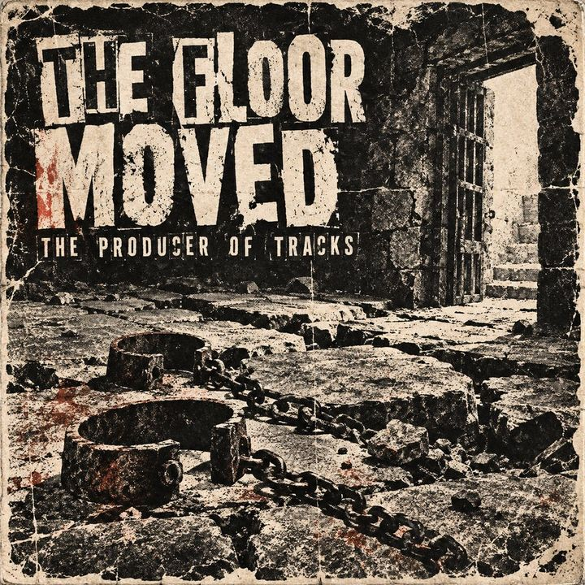

01 / BID ME COME
THE STORM
The storm around us. The storm inside us.
…the ship was now in the midst of the sea, tossed with waves: for the wind was contrary.Matthew 14:24 · KJV
BID ME COME

THE FLOOR MOVED
The music is free to hear. If it means something to you and you’d like to support more music and the world around it, you can contribute here.
Support the music (opens in a new tab)Optional, one-time support. Received by Shadowline Strategic LLC, the company behind The Producer of Tracks.
Encounters
The songs are a doorway into Scripture, with Jesus at the center. In the Gospels He meets people face to face: on the water, at a well. In Acts the risen Lord works through His apostles, and a prison at midnight hears His name.
Better with someone
Faith was never meant to be a solo listen. Bring a friend, your family or your small group through one song and one encounter.
Keep it close
Put TPoT on your home screen. The encounters and readings open even without a connection.
Matthew 14 · Bid Me Come
Peter steps toward Jesus. Then he sees the wind and starts to sink.
Tap the water to call out with Peter.
Jesus reaches for Peter while the wind is still blowing.
Stay with Matthew’s account, then hear its echoes in the apostolic writings and the early Church.
But the ship was now in the midst of the sea, tossed with waves: for the wind was contrary. And in the fourth watch of the night Jesus went unto them, walking on the sea. And when the disciples saw him walking on the sea, they were troubled, saying, It is a spirit; and they cried out for fear. But straightway Jesus spake unto them, saying, Be of good cheer; it is I; be not afraid.
And Peter answered him and said, Lord, if it be thou, bid me come unto thee on the water. And he said, Come. And when Peter was come down out of the ship, he walked on the water, to go to Jesus.
But when he saw the wind boisterous, he was afraid; and beginning to sink, he cried, saying, Lord, save me.
And immediately Jesus stretched forth his hand, and caught him, and said unto him, O thou of little faith, wherefore didst thou doubt?
And when they were come into the ship, the wind ceased. Then they that were in the ship came and worshipped him, saying, Of a truth thou art the Son of God.
In John 21, after the resurrection, Peter hears that it is the Lord on the shore and throws himself into the sea to reach Him. After breakfast Jesus asks Peter whether he loves Him and entrusts him with the care of His sheep. Read it alongside the call in Matthew 14. What does Jesus ask of the man He once lifted out of the waves?
First Peter asks the churches to put their anxieties in God’s hands because He cares for them. Hear Peter’s cry again with that invitation in mind.
John 21:4-17 ↗ 1 Peter 5:6-10 ↗Origen asks readers to recognize a Peter among themselves: someone who truly wants to come to Christ and still gets frightened. He draws attention to the timing. Christ stretches out His hand while Peter is still crying out. Read verses 30 and 31 aloud. How much time passes between the cry and the answer?
Commentary on Matthew, book 11, §6 ↗Chrysostom pays attention to Peter’s request: he asks to come to Jesus. The wonder of walking on water matters because of whom Peter wants to reach. Chrysostom also observes that Christ catches Peter before quieting the wind. He compares the catch to a mother bird carrying a falling nestling back to its nest.
Homily 50 on Matthew, §2 ↗Augustine hears the whole Church in Peter’s story, with both its strength and its weakness. The same disciple trusts, falters, and calls for help. Augustine asks the strong to bear with the weak. Who could you stand beside this week while they find their footing?
Sermon 26 on the New Testament, §§1, 4, 8 ↗01 / BID ME COME
The storm around us. The storm inside us.
…the ship was now in the midst of the sea, tossed with waves: for the wind was contrary.Matthew 14:24 · KJV
02 / BID ME COME
Be of good cheer; it is I; be not afraid.Matthew 14:27 · KJV
03 / BID ME COME
Lord, if it be thou, bid me come unto thee on the water. And he said, Come.Matthew 14:28-29 · KJV
04 / BID ME COME
…beginning to sink, he cried, saying, Lord, save me. And immediately Jesus stretched forth his hand, and caught him…Matthew 14:30-31 · KJV
You've seen this hand before. Here it is holding you, and the sea is still rough.
05 / BID ME COME
And when they were come into the ship, the wind ceased. Then they that were in the ship came and worshipped him…Matthew 14:32-33 · KJV
What has grown louder than the mercy you've seen?
Grief and fear may still be in the boat. Bring them to him. Turn back, ask for mercy, and keep coming with others to worship. Day by day, he keeps making us new.
Mark 6:50–52 (KJV): "…Be of good cheer: it is I; be not afraid. And he went up unto them into the ship; and the wind ceased: and they were sore amazed in themselves beyond measure, and wondered. For they considered not the miracle of the loaves: for their heart was hardened."
Mark 6:48 (KJV, part): "And he saw them toiling in rowing; for the wind was contrary unto them…"
Mark's account doesn't include Peter walking on the water. It adds something else: these disciples had just seen the loaves multiplied and still didn't understand. Seeing a miracle and still struggling to trust is an old story.
TWO VOICES FROM THE EARLY CHURCH
Two readers among many. One preached in Greek at Antioch, one in Latin in North Africa. They read the same passage in their own ways, and they're not presented here as one agreed interpretation.
John Chrysostom · c. 347–407 · Homilies on the Gospel of Matthew, Homily 50
Why he wrote: he preached on these verses to his congregation as he worked through Matthew.
"For neither did he say, Bid me walk on the water, but what? Bid me come unto You."
"For he not only believed that He was able Himself to walk on the sea, but that He could lead upon it others also; and he longs to be quickly near Him."
"And for this reason, you see, even when He had caught hold of Him, He suffers the wind to blow, showing that no hurt comes thereby, when faith is steadfast. And as when a nestling has come out of the nest before the time, and is on the point of falling, its mother bears it on her wings, and brings it back to the nest; even so did Christ."
Paraphrase: Chrysostom is also frank that Peter's weakness of faith, not the wind, made him sink. He holds that honestly together with the gentleness of the catch.
Augustine of Hippo · 354–430 · Sermon 26 on the New Testament (also numbered 76), §§1, 8
Why he wrote: a sermon on this Gospel reading, preached to his congregation.
"When he looked for strength from the Lord, he had strength from the Lord; as a man he tottered, but he returned to the Lord."
"Your mercy, Lord, helped me. Not my own strength, but Your mercy."
Paraphrase: for Augustine, Peter here stands for the whole Church, "the type of the One Church" . Peter isn't a lone hero. He stands for all of us together.
Matthew comes to us in Koine Greek, the common Greek of its era. These are brief study notes, not a replacement translation. Word meaning comes from usage and the surrounding passage. The reflections below are invitations for today, not additional meanings hidden in the Greek.
The setting. This crossing follows the feeding of the crowd. Jesus sends the disciples ahead and withdraws to pray. The “fourth watch” places his approach near dawn, roughly 3-6 a.m. The danger is real water and wind before it becomes an image for our lives. NET translation note · Matthew 14 and historical notes
θαρσεῖτε tharseite, from tharseō · Matthew 14:27
Language. An encouragement to take courage. The older English “cheer” need not mean feeling happy. Jesus addresses frightened disciples before the wind has ceased.
Reflect. Courage can begin by turning toward Christ while fear is still present. This is an application of the scene, not a promise that distress disappears on command.
ἐγώ εἰμι egō eimi · Matthew 14:27
Language and interpretation. Literally “I am,” here identifying Jesus to the disciples. The USCCB notes connect Matthew to Mark 6:50 and a possible echo of God's self-revelation in Exodus and Isaiah. That connection is an interpretation of the biblical setting, not something these two Greek words prove by themselves.
Reflect. Whom am I listening for in the storm?
ἐδίστασας edistasas, from distazō · Matthew 14:31
Language. Distazō can mean doubt, waver or hesitate. Its other New Testament occurrence is Matthew 28:17. Here Jesus also calls Peter ὀλιγόπιστε, oligopiste: one of little faith. The rebuke is real; so is the immediate rescue. Neither word makes grief itself a measure of unbelief.
Reflect. Peter's cry still turns toward Jesus. What would it mean to ask for help before I have resolved everything?
Our reflection. What the worship reveals. Matthew ends with the disciples worshipping Jesus in the boat and saying, "Of a truth thou art the Son of God" (14:33, KJV). In the Old Testament, it is God "which alone spreadeth out the heavens, and treadeth upon the waves of the sea" (Job 9:8, KJV). Matthew doesn't quote Job, and linking them is an interpretation. But the disciples' response is clear: the one who walked to them on the water is the one they worship.
Let the music continue, or stop it for quiet. If you wish, make Peter's words your own:
Lord, save me.
Matthew 14:30 · KJV
Stay with the words as long as you need. There is nothing to complete here.
Listen with someone you trust. Share one line that stayed with you, and make room for their response. Bring the passage to prayer and conversation in your parish or congregation.
Scripture: King James Version. Short extracts are marked with an ellipsis. Original reflections are separate from Scripture quotations.
KJV source · Chrysostom, Homily 50 on Matthew · Augustine, Sermon 26 (76)
Patristic quotations use the NPNF translations by George Prevost, revised by M. B. Riddle, and R. G. MacMullen (1888). Two distinct readings, not a claim of universal agreement.
Start the song in another tab, then scroll.
01 / THE FLOOR MOVED
A girl used for what she could earn. The spirit left her in Jesus' name, and her owners saw only lost money. Two men beaten without a trial, their feet made fast in the stocks.
02 / THE FLOOR MOVED
And at midnight Paul and Silas prayed, and sang praises unto God: and the prisoners heard them.Acts 16:25 · KJV
03 / THE FLOOR MOVED
…immediately all the doors were opened, and every one's bands were loosed.Acts 16:26 · KJV
04 / THE FLOOR MOVED
Do thyself no harm: for we are all here.Acts 16:28 · KJV
The first thing their freedom did was protect the man who held the keys.
05 / THE FLOOR MOVED
…he took them the same hour of the night, and washed their stripes; and was baptized, he and all his, straightway.Acts 16:33 · KJV
When the floor moves under you, who is in the dark beside you?
The wounds were washed the same night as the baptism. Grace didn't pretend nothing had happened: in daylight Paul still named the injustice (16:37). Come to Christ as you are, turn back where you need to, and find a table with others. He keeps making strangers into one household.
Before you go
The jailer asked, “what must I do to be saved?” and was told, “Believe on the Lord Jesus Christ.” Acts 16:30–31 · KJV
Interactive 3D room. The scene includes motion and plays without sound.
Swipe sideways to look. Use the room button to move forward. Swipe beside the scene to scroll the page.
01 / The listening station

Hear all 11 tracks in album order.
1 / The question
You don't have to say it out loud. If it helps, choose the nearest one. Your answer stays on this page. It isn’t saved or sent.
2 / Scripture in context
Context · our summary
John 4. Jesus is travelling through Samaria, tired from the road, and sits down at Jacob's well around midday. A Samaritan woman comes to draw water. Jews and Samaritans kept apart, so his request surprises her.
Scripture · John 4:7, 4:9–10, 4:13–15 (KJV)
7 There cometh a woman of Samaria to draw water: Jesus saith unto her, Give me to drink.
9 Then saith the woman of Samaria unto him, How is it that thou, being a Jew, askest drink of me, which am a woman of Samaria? for the Jews have no dealings with the Samaritans.
10 Jesus answered and said unto her, If thou knewest the gift of God, and who it is that saith to thee, Give me to drink; thou wouldest have asked of him, and he would have given thee living water.
13 Jesus answered and said unto her, Whosoever drinketh of this water shall thirst again:
14 But whosoever drinketh of the water that I shall give him shall never thirst; but the water that I shall give him shall be in him a well of water springing up into everlasting life.
15 The woman saith unto him, Sir, give me this water, that I thirst not, neither come hither to draw.
What happens next · our summary
He names her life plainly: five husbands, and the man she lives with now is not her husband (4:16–18). He doesn't send her away. She asks him a question about worship, and he tells her who he is (4:19–26). Then she leaves her waterpot and runs back to the town: “Come, see a man, which told me all things that ever I did” (4:28–29).
Who read it before us3 / Who read it before us
Two voices among many, one from the Greek-speaking East and one from the Latin West. They aren't offered as one agreed reading.
John Chrysostom
When and why · our summary
Preaching through John's Gospel to his congregation in the late fourth century, he stops at these verses to explain what the “water” is.
Direct quote · translation by Charles Marriott
“So also conversing with the woman, He calls the Spirit water; for, Whosoever shall drink of the water which I shall give him, shall never thirst.”
“For as one that has a well within him could never be seized by thirst, so neither can he that has this Water.”
Paraphrase
He also notes that Jesus doesn't call the well's water worthless. He shows something greater than it.
Augustine of Hippo
When and why · our summary
Written around 397–400 as a long prayer telling the story of his own restless search. These lines are not a comment on John 4. We place them here because they name the same thirst.
Direct quote · translation by J. G. Pilkington
“You have made us for Yourself, and our hearts are restless until they rest in You.”
4 / Room to reflect
Our reflection · not Scripture, not a quote
A moment for prayer. If you wish, make her request your own: "Sir, give me this water, that I thirst not" (John 4:15, KJV). There's nothing to complete here.
Carry it into life together. She went back into the town and told people. Tell one person you trust what you heard here, or bring it to prayer in your parish or congregation.
5 / Return
The well is still here whenever you want to come back. So is the music.
Before you go
She left her waterpot and went to tell the town: “Come, see a man.” John 4:28–29 · KJV
About
The Producer of Tracks makes raw, Scripture-rooted music about shame, grace and the way back. Based in the United States.
Listen to FIND ME free.
The music is free to hear. If it means something to you and you’d like to support more music and the world around it, you can contribute here.
Support the music (opens in a new tab)Optional, one-time support. Received by Shadowline Strategic LLC, the company behind The Producer of Tracks.